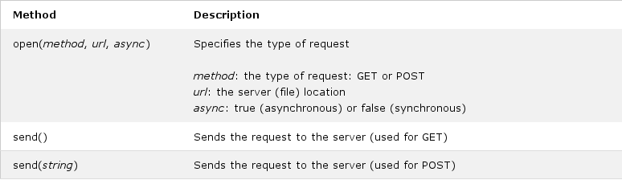

The XMLHttpRequest object is used to exchange data with a server.
To send a request to a server, we use the open() and send() methods of the XMLHttpRequest object:
xhttp.open("GET", "ajax_info.txt", true);
xhttp.send();
GET is simpler and faster than POST, and can be used in most cases. However, always use POST requests when:
A simple GET request:
Click the button several times to see if the time changes, or if the file is cached.
If you want to send information with the GET method, add the information to the URL:
A simple POST request:
To POST data like an HTML form, add an HTTP header with setRequestHeader(). Specify the data you want to send in the send() method:
The url parameter of the open() method, is an address to a file on a server:
xhttp.open("GET", "ajax_test.asp", true);
The file can be any kind of file, like .txt and .xml, or server scripting files like .asp and .php (which can perform actions on the server before sending the response back).
Server requests should be sent asynchronously.
The async parameter of the open() method should be set to true:
xhttp.open("GET", "ajax_test.asp", true);
By sending asynchronously, the JavaScript does not have to wait for the server response, but can instead:
With the XMLHttpRequest object you can define a function to be executed when the request receives an answer.
The function is defined in the onreadystatechange property of the XMLHttpResponse object:
Demostración del uso de la propiedad onreadystatechange del objeto XMLHttpRequest().
To execute a synchronous request, change the third parameter in the open() method to false:
xhttp.open("GET", "ajax_info.txt", false);
Sometimes async = false are used for quick testing. You will also find synchronous requests in older JavaScript code.
Since the code will wait for server completion, there is no need for an onreadystatechange function:
Let AJAX change this text.